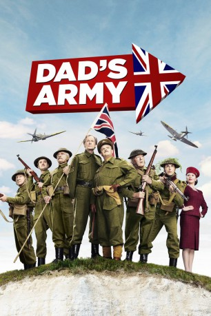

#3846 Dad's Army
 
 IMDB-Wertung: 5.2 / 10
IMDB-Wertung: 5.2 / 10  Tomatometer: 32
Tomatometer: 32  Metascore: 0
Metascore: 0 
1944: Während die Alliierten gerade in Frankreich einmarschieren, hat die Bürgerwehr des kleinen britischen Kurorts Walmington-on-Sea ihre ganz eigenen Probleme. Denn die Moral des kriegsuntauglichen Haufens befindet sich auf einem absoluten Tiefpunkt. Doch eine neue Mission gibt ihnen die unerwartete Möglichkeit, ihren Stolz und ihren Mut unter Beweis zu stellen. Sie sollen die Armeestation der Hafenstadt Dover, einen strategisch wichtiger Stützpunkt, sichern. Doch als die bezaubernde Reporterin Rose Winters auftaucht, um über die Heldentaten der Bürgerwehr zu berichten, ist es um manch einen der Männer geschehen. Als dann auch noch der britische Geheimdienst MI5 Wind davon bekommt, dass sich ein deutscher Spion inmitten der Bürgerwehr von Walmington-on-Sea befinden soll, gerät die Mission der tollpatschigen Soldaten völlig außer Kontrolle...
Jahr: 2016
Dauer: 99 Minuten
FSK:
Land: England Studio: UPITonspuren: DD5.1 - ,
Untertitel: Deutsch, Englisch,
Auflösung: 1080p (1920x808) Größe: 8110 MB
Genre: Komödie
Regisseur: Oliver Parker
Drehbuch: Yi'nan Diao
Soundtrack:
Darsteller:
 Mark Tandy als Major Cunningham
Mark Tandy als Major Cunningham- Russell Balogh als Lundt
 Andrew Havill als Captian Meeks
Andrew Havill als Captian Meeks- Emily Atack als Daphne
 Daniel Mays als Walker
Daniel Mays als Walker Toby Jones als George Mainwaring
Toby Jones als George Mainwaring- Blake Harrison als Frank Pike
 Michael Gambon als Godfrey
Michael Gambon als Godfrey Bill Nighy als Arthur Wilson
Bill Nighy als Arthur Wilson- Bill Paterson als Frazer
 Tom Courtenay als Jones
Tom Courtenay als Jones- Michael Heath als Keunzer
 Frank Williams als Vicar
Frank Williams als Vicar Mark Gatiss als Colonel Theakes
Mark Gatiss als Colonel Theakes- Holli Dempsey als Vera
- Sarah Lancashire als Mavis Pike
 Alison Steadman als Mrs Fox
Alison Steadman als Mrs Fox Catherine Zeta-Jones als Rose Winters
Catherine Zeta-Jones als Rose Winters- Annette Crosbie als Cissy
- Ian Lavender als Brigadier Pritchard
- Mark Warner als German Captain
- David Hinde als Town Crier
 Neil Broome als Platoon
Neil Broome als Platoon- Angela Baines als ATS Platoon
- Heinz als The Pigeon
- Bertie als The Bull
- Nigel Launder als Farmer
- Oliver Tobias als Canaris
- Phil Robertson als Lambrecht
- Felicity Montagu als Elizabeth Mainwaring
- Jacqueline Tong als Mrs Todd
- Martin Savage als Hodges
- Julia Foster als Dolly
- Alan Turkington als German 1
- Laurence Dobiesz als German 2
- Ellen Capron als ATS Nurse
- Stuart Adams als Platoon
- Stewart Short als Platoon
- Chris Dale als Platoon
- Philip Gascoyne als Platoon
- Paul Hodgson als Platoon
- Alan Jackson als Platoon
- Harry Knight als Platoon
- Susan Dukes als ATS Platoon
- Rebecca Rosenberg als ATS Platoon
- Clare Crowther als ATS Platoon
- Julia O'Toole als ATS Platoon
- Angela Jobson als Nurse , uncredited
- Charlotte Nichol als Aryan Mother , uncredited
- Ryan Pickard als Young Scamp #1 , uncredited
Datei: X:\2016(A-F)\Dad's Army (2016, FSK, 1920x808).mkv seit 20.06.2016
Festplatte: HD 2016(A-Z)
 Es gibt insgesamt 147 Filme in der Gruppe '2016(A-F)'
Es gibt insgesamt 147 Filme in der Gruppe '2016(A-F)'